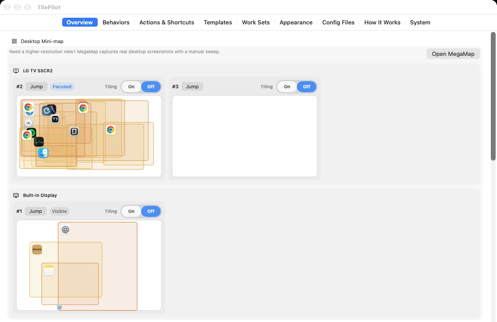
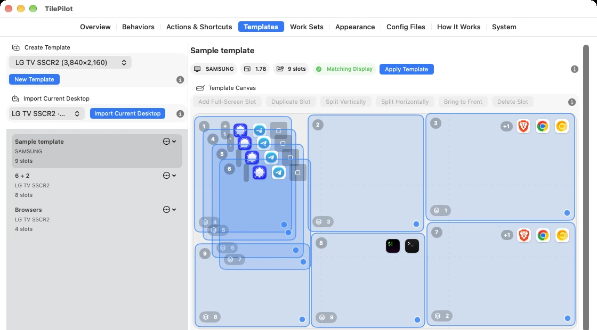
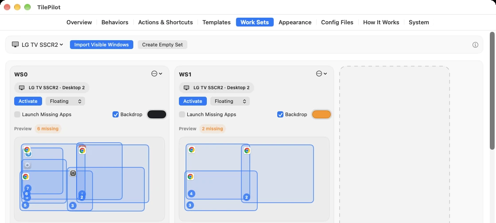
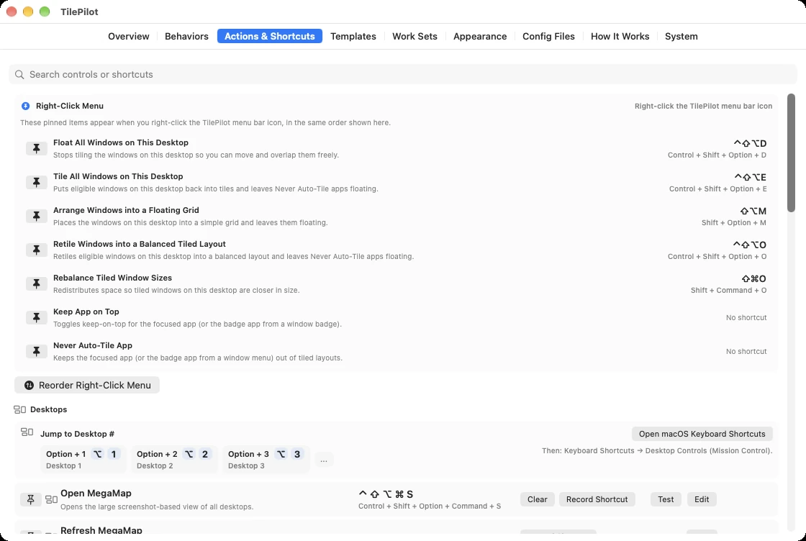
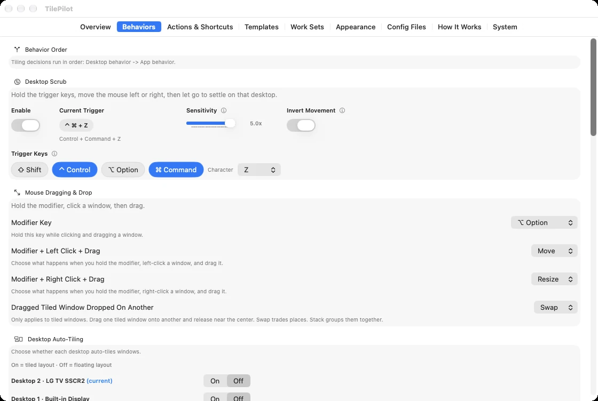
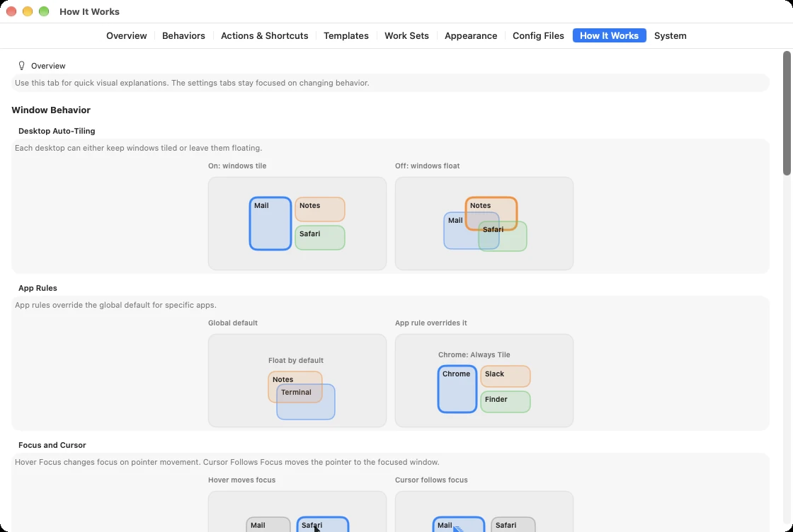
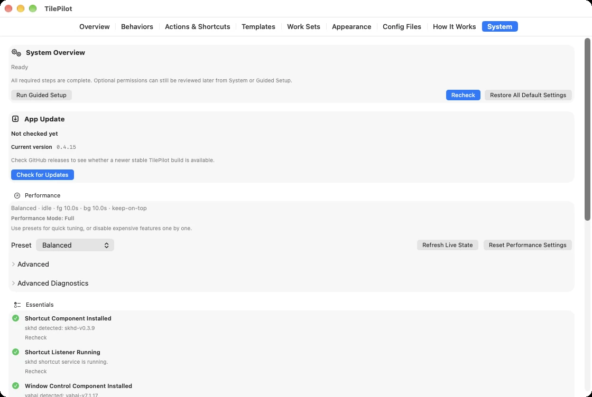
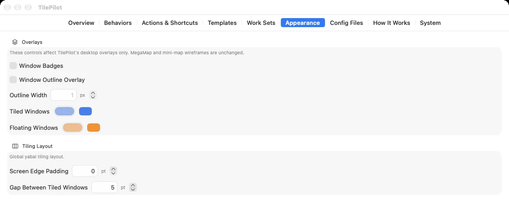

Tiled
yabai places the window in the desktop's layout. Tiled windows share the screen without overlapping, and the layout rebalances as windows open and close.
Free · macOS 13 or later · Apple silicon
TilePilot is a native app built on yabai and skhd. Tile, float, and arrange windows from a clear interface while you learn the shortcuts. Once the keys become habit, you can leave the mouse alone.
v0.4.16 · 4.8 MB disk image · signed with Developer ID and notarized by Apple
yabai places the window in the desktop's layout. Tiled windows share the screen without overlapping, and the layout rebalances as windows open and close.
You decide where the window goes, or a Template or Work Set does. Floating windows keep their exact size and can overlap.
Some apps don't tile well. Mark them once and they stay floating, even when you tile everything else on the desktop.
Each desktop has its own tiling switch, and optional badges and outlines show each window's state right on screen.
A tour of the app
Overview
A live mini-map shows each display and desktop, with every window drawn in its tiled or floating color. Jump to a desktop or flip its tiling switch from the same screen.

Pick Windows to Tile
When the whole desktop is too much, open the picker. It lists this desktop's windows in front-to-back order and preselects your usual count, so the last few windows you used are ready to go.
Templates
Templates are floating layouts you design once per display. Draw slots, split and duplicate them, or import the layout you already have on screen, then apply it to any desktop.

Work Sets
A Work Set remembers the exact windows for one job on one desktop, in front-to-back order. Activate it and the whole pile comes forward together.

Actions & Shortcuts
Every action is named for where your windows end up, such as "Tile All Windows on This Desktop." Run it from the app, see its shortcut next to it, and record your own when the default doesn't suit you.

Behaviors
Choose which desktops tile, which apps never auto-tile or stay on top, and how focus and the pointer behave. Mouse modifiers let you move, resize, or swap windows by dragging.




Default shortcuts
New installs start with a small, consistent set. I, J, K, and L work like arrow keys, and the modifier decides what happens.
Change any shortcut or record your own in Actions & Shortcuts.
Your setup stays yours
# your own lines stay exactly as you wrote them
cmd - return : open -na Terminal
# >>> TILEPILOT MANAGED BEGIN
# Managed by TilePilot. Unknown lines outside this block are preserved.
alt - j : yabai -m window --focus west
alt - l : yabai -m window --focus east
# <<< TILEPILOT MANAGED ENDTilePilot changes yabairc and skhdrc only between its markers. The Config Files tab keeps backups you can restore.
The window-control helpers start when you choose to start them. That is the moment macOS asks for Accessibility approval.
TilePilot works without turning off System Integrity Protection or loading yabai's scripting addition.
MegaMap's desktop screenshots live only for the current session. Screen Recording is needed only if you want them.
At most twice a day it checks GitHub Releases for a newer version and links you to the release page. It never downloads or installs on its own.
Ships pinned builds of yabai 7.1.17 and skhd 0.3.9 and installs them for you. Nothing to set up from the command line.
Install
No. TilePilot installs and runs both for you, and every action has a button and a plain name. The config files are there when you want them, but you never have to open a terminal.
No. TilePilot sticks to features that work with SIP on. Workflows that need yabai's scripting addition are out of scope for now.
TilePilot detects them and can work with them. If you switch to its bundled helpers, it stops the Homebrew services first. Your Homebrew packages stay installed.
No. It edits only the block between its own markers and keeps backups you can restore from the Config Files tab.
yabai and skhd need Accessibility, which macOS requests when you start window control. Screen Recording is only for MegaMap's real screenshots. Start at Login is optional.
No. It borrows i3's habits: stable desktops, a few repeatable actions, tiling as the normal state, and floating as a deliberate exception. Everything else is a native Mac app with setup, visibility, and recovery built in.
The current release is built for Apple silicon only.
Nothing. Download it from GitHub Releases.